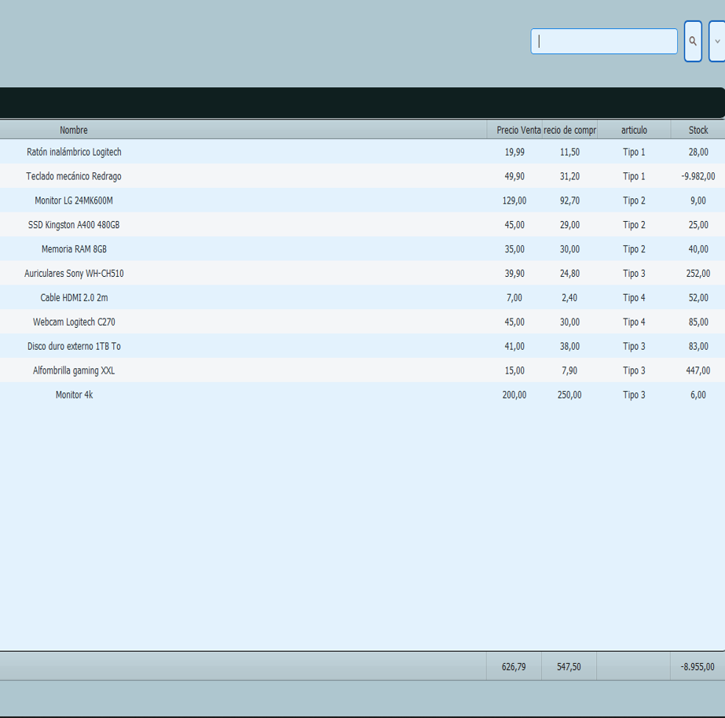
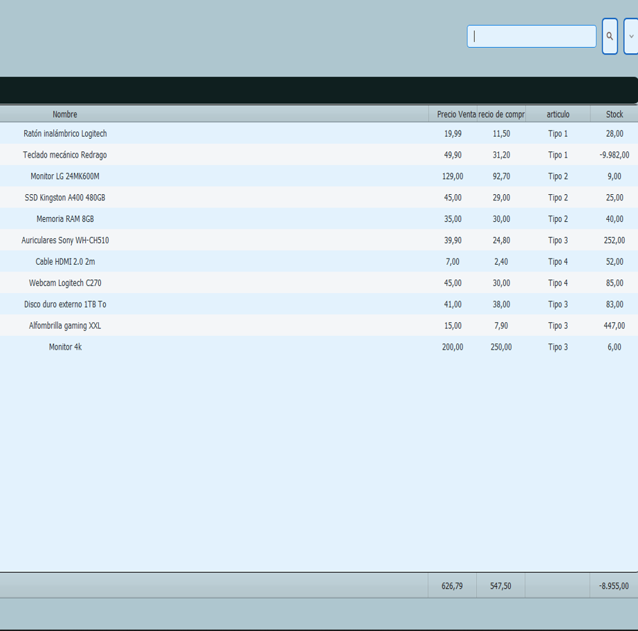
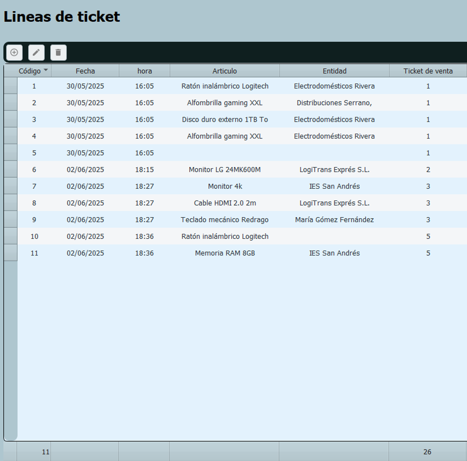
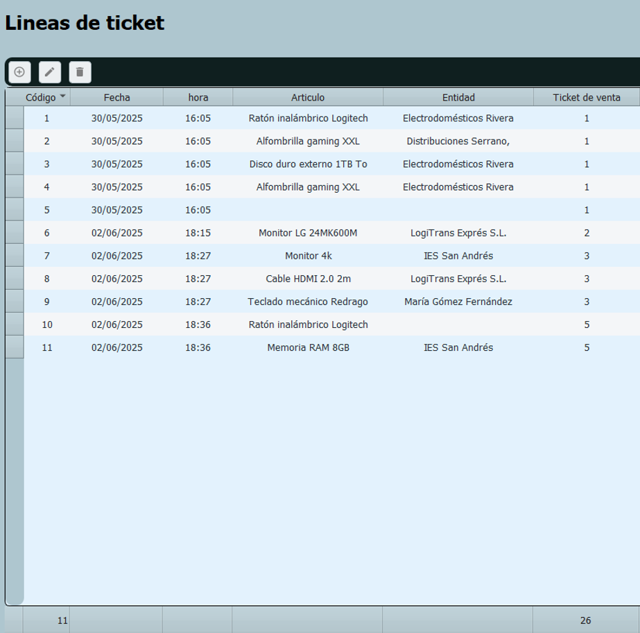

Proyecto Velneo (Velneo vDevelop y Velneo vClient)
Proyecto desarrollado en Velneo que tiene como objetivo central implementar un sistema que permita controlar y analizar el beneficio económico obtenido por cada entidad a través de tickets generados. El sistema proporciona un seguimiento detallado del acumulado de importes y beneficios por cada operación registrada, permitiendo una gestión financiera más precisa y orientada a resultados.
Funcionalidades clave:
- Registro de operaciones por entidad.
- Cálculo automático del beneficio asociado a cada ticket.
- Visualización del historial económico por cliente, grupo o categoría.
- Utilización de tablas estáticas y dinámicas para organizar la información.
- Posibilidad de actualizar datos de forma automática mediante procesos integrados.
Velneo vDevelop y Velneo vClient
Este desarrollo aprovecha las capacidades de Velneo para ofrecer una solución rápida, estructurada y fácilmente escalable para entornos comerciales o administrativos.
 

 
